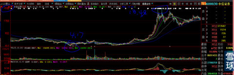
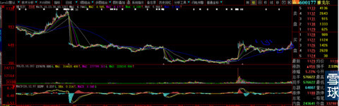
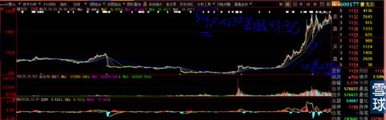
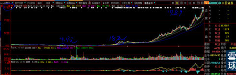

转眼股市进入了2006年的10月下旬，与今天的牛市刚刚2个月不到相比，2005年开始的大牛市已经走过整整一年。我骑着黑马找黑马，在第一年那么大牛市里自视牛逼却连牛毛都没有捞着，我痛定思痛：认识到“人间正道是沧桑”，决心再也不歪门邪道小聪明，重回正途“而今迈步从头越”。开始细心研究，很快就发现新的黄金撒满地，可恨股市傻逼太多，连弯腰去捡的人都没有。通过不怕不识货就怕货比货的大妈买菜方法，很快找回信心，我当时的心态一下子就恢复到正常水平。对比简述以下：
下图是600030中信证券2006年10月截图，进行1年的牛市，股价已经从4.17元涨到18.48元涨幅3.43倍。你要说我有技术没有恐高症，我觉得你不是夸我是骂我。要知道那个时候是没有历史经验可以对自己进行心理按摩的。
举例这个图形，是想说，牛市已经进入到这种程度，还有潜在牛股可寻吗？解答你们今天的问题：券商股已经狂涨到这么高，牛市还能继续吗？现在处于什么阶段？你们去看看我写的《坚信沪指能够走到3500点》，那是很有底气的，不是没有阅历积累的经验空口胡说八道。

有时候我自己都很佩服自己，在牛市都进行长达1年后那样的人心浮躁时期，我还是能选出内涵是那么丰富，却被沙尘掩埋的黄金股——600177雅戈尔。你们可以看到下图股价是多么的低廉，轰轰烈烈进行1年的大牛市简直与它无关，内涵却又是那么的丰富（简直就是打明牌了，稍微有点证券阅历的人都知道当年的雅戈尔就是金融银行+券商影子股）。就因为它股本17亿股，流通盘高达9亿股（去除大股东其实应该减少很多），在大牛市中，它连一年前的“000061农产品”都不如。经过半个月的思考，2006年10月30日我5.77元全仓买入它。凭我的技术，我也知道股价走到下图圈2的地方会有回踩动作，就像今天的新黄浦，但是我再也不会凭技术去做小聪明的T了，我知道无论T出多少差价，一定会让我与大牛股擦肩而过，这个时候与技术已经完全无关，是常人患得患失的懦弱本性导致一个没有勇敢者心的剑术高手死于一个手拿菜刀不要命的二愣子之手。

冬去春来，种什么样的树苗结什么样的果。半年后股价达到35.5*10送2.5股=44.37+分红0.3元=44.67元/成本价5.77元=涨幅6.74倍。

再看当时对比的中信证券，从18.35元再涨到117.89元=5.42倍，那个上面第一张图所看到的的横盘平台在这里显得多么微不足道？这就是时空转换的威力与效果。

现在还有人问我：牛市长期横盘股未来怎么走吗？再这样问的人，请去医院测测你的IQ是多少。
作业：我为什么举例这些图形？有什么暗示？想给大家一个什么心理预期？
 |
牛市的教训与忠告之二：牛市初期最大的风险就是知道有风险炒的是心 2014-12-28 21:33:49 |
Copyright © 1996-2014 SINA Corporation All Rights Reserved.